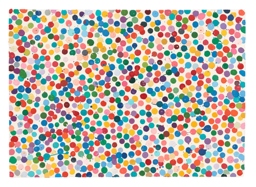

"Everyone else inside"
The Currency, 2021 · Digital · #2629 ERC-721
R$ 9.000 (floor price atual) + R$ 2.200 (Samsung Frame)
The Currency é um projeto onde o colecionador deve escolher entre manter a versão digital ou trocá-la pela peça física correspondente — a não escolhida foi destruída. Esse gesto radical transforma o próprio ato de escolher em parte essencial da obra.
Ao final do processo, foram consolidados 4.851 obras digitais e 5.149 físicas, com milhares de unidades permanentemente eliminadas — reforçando o caráter irreversível, escasso e histórico da coleção.
| Artista | Damien Hirst |
| Coleção | The Currency — 2021 |
| Mídia | Digital |
| Token | #2629 ERC-721 (Ethereum) |
| Contrato | 0xaadc2d42…f43bb60aa |
| IPFS | ipfs://QmTvCyRe4…/2629.json |
| Procedência | Heni Productions, London |